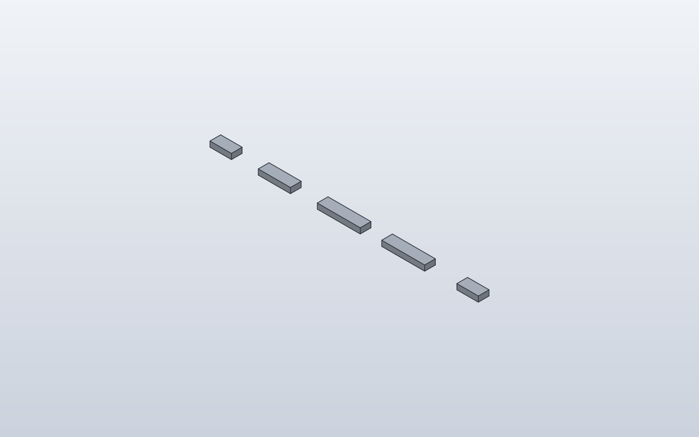
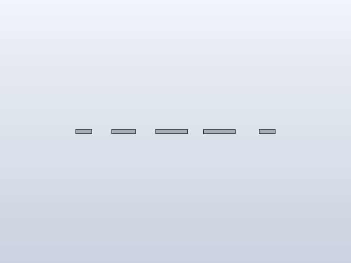
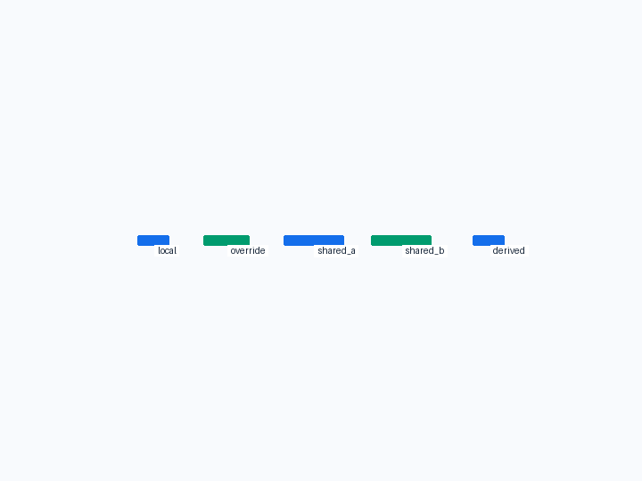
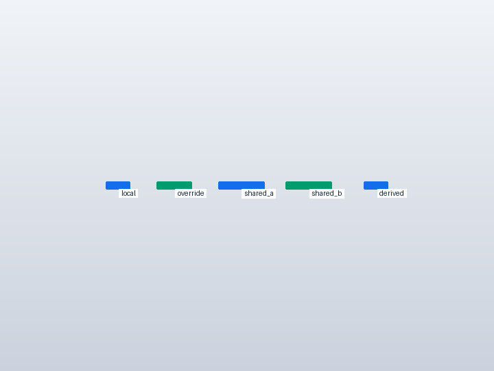
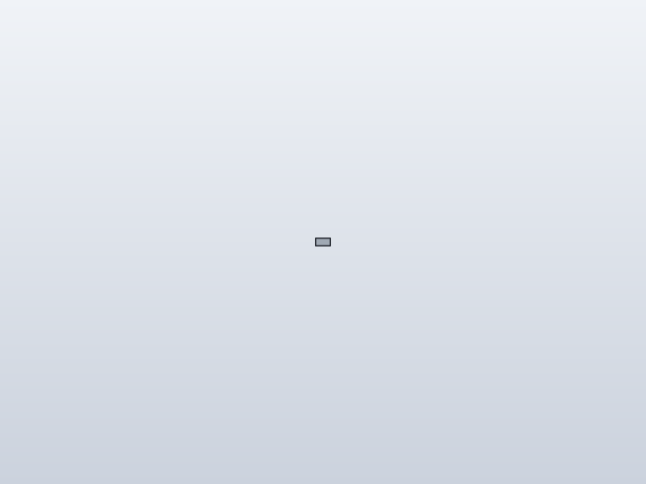
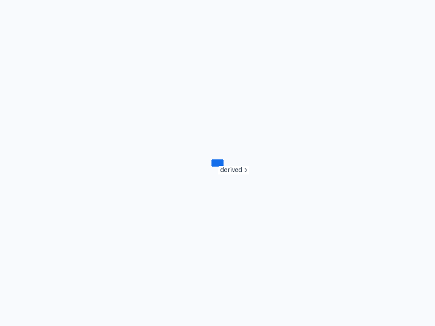
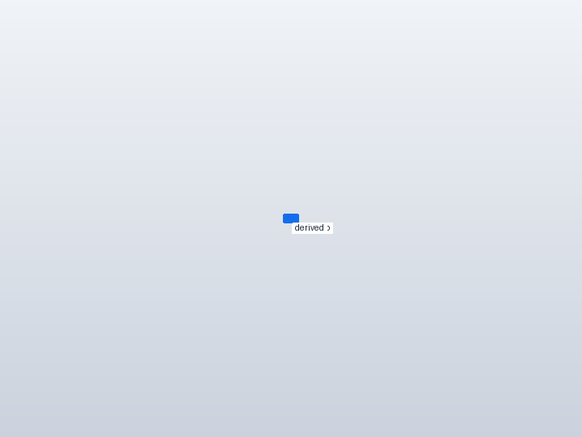
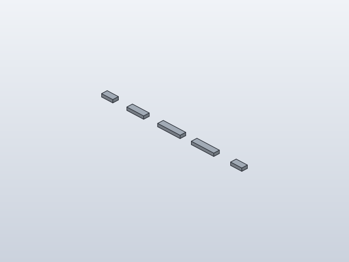
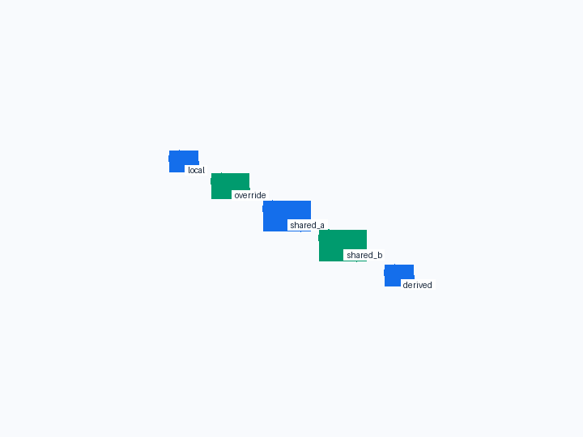
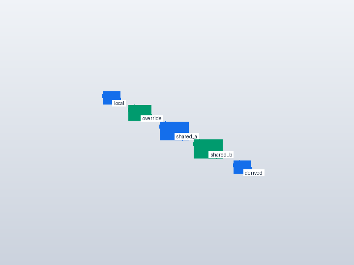

Forge qualification case
Implicit component parameters and shared dependencies
Verify that public component defaults become editable native parameters automatically, while parent Parameters/Expressions are reused rather than duplicated in the child.










1. Forge contract
Public API
plain reusable class fields; Panel(width=self.shared_width); Panel(width=self.shared_width / 2)
Internal Forge model
Local numeric defaults become component-local Parameters; inherited Parameter/Expression inputs become external bindings to the existing parent dependency.
SolidCraft lowering
Local component parameters are namespaced (for example Panel_width); inherited names such as shared_width remain unprefixed and are emitted once even when several child definitions use them.
2. Native verification
Expected result
The saved SolidCraft design exposes Panel_width, Panel_2_width and shared_width; changing shared_width updates both directly-bound children and the derived half-width child without rerunning Python.
Parametric mutation
Change shared_width from 80 to 100 mm in the saved native design; widths must change from [40,40,60,80,80] to [40,50,60,100,100].
Evidence
- Fixture source
- Generated command JSON
- results.json
- measurements-shared-width-100.json
- measurements.json
- parameters-export-results.json
- parameters.json
- joint-inspect.json
- model.json
- model-shared-width-100.sc
- model.sc
- model.step
- qualification-result.json
- validation.json
- visual-validation.json
- camera-front.json
- camera-iso.json
- camera-right.json
- Native snapshot: model.png
- Native snapshot: model-front.png
- Native snapshot: goal-front.png
- Native snapshot: overlay-front.png
- Native snapshot: model-right.png
- Native snapshot: goal-right.png
- Native snapshot: overlay-right.png
- Native snapshot: model-iso.png
- Native snapshot: goal-iso.png
- Native snapshot: overlay-iso.png


3. Results
shared width 100 · 5 bodies · measurements-shared-width-100.json
Parameters
| Name | Value |
|---|---|
Panel_width | 40.0 |
Panel_2_width | 60.0 |
shared_width | 100.0 |
Bodies
| Body | BBox min | BBox max |
|---|---|---|
| Panel | [-20, -10, 0] | [20, 10, 10] |
| Panel_2 | [70, -10, 0] | [130, 10, 10] |
| Panel_3 | [170, -10, 0] | [270, 10, 10] |
| Panel_3 (Panel 3:2) | [290, -10, 0] | [390, 10, 10] |
| Panel_4 | [435, -10, 0] | [485, 10, 10] |
Baseline · 5 bodies · measurements.json
Parameters
| Name | Value |
|---|---|
Panel_width | 40.0 |
Panel_2_width | 60.0 |
shared_width | 80.0 |
Bodies
| Body | BBox min | BBox max |
|---|---|---|
| Panel | [-20, -10, 0] | [20, 10, 10] |
| Panel_2 | [70, -10, 0] | [130, 10, 10] |
| Panel_3 | [180, -10, 0] | [260, 10, 10] |
| Panel_3 (Panel 3:2) | [300, -10, 0] | [380, 10, 10] |
| Panel_4 | [440, -10, 0] | [480, 10, 10] |
Semantic validation
| Status | Level | Check | Expected | Actual |
|---|---|---|---|---|
| PASS | Q4 | declared target geometry | [{"label": "local", "min": [-20, -10, 0], "max": [20, 10, 10]}, {"label": "override", "min": [70, -10, 0], "max": [130, 10, 10]}, {"label": "shared_a", "min": [180, -10, 0], "max": [260, 10, 10]}, {"label": "shared_b", "min": [300, -10, 0], "max": [380, 10, 10]}, {"label": "derived", "min": [440, -10, 0], "max": [480, 10, 10]}] | [{"min": [-20.0, -10.0, 0.0], "max": [20.0, 10.0, 10.0]}, {"min": [70.0, -10.0, 0.0], "max": [130.0, 10.0, 10.0]}, {"min": [180.0, -10.0, 0.0], "max": [260.0, 10.0, 10.0]}, {"min": [300.0, -10.0, 0.0], "max": [380.0, 10.0, 10.0]}, {"min": [440.0, -10.0, 0.0], "max": [480.0, 10.0, 10.0]}] |
| PASS | Q4 | baseline widths | [40, 40, 60, 80, 80] | [40.0, 40.0, 60.0, 80.0, 80.0] |
| PASS | Q4 | baseline parameters | {"Panel_width": 40.0, "Panel_2_width": 60.0, "shared_width": 80.0} | {"Panel_width": 40.0, "Panel_2_width": 60.0, "shared_width": 80.0} |
| PASS | Q5 | declared mutation target geometry | [{"label": "local", "min": [-20, -10, 0], "max": [20, 10, 10]}, {"label": "override", "min": [70, -10, 0], "max": [130, 10, 10]}, {"label": "shared_a", "min": [170, -10, 0], "max": [270, 10, 10]}, {"label": "shared_b", "min": [290, -10, 0], "max": [390, 10, 10]}, {"label": "derived", "min": [435, -10, 0], "max": [485, 10, 10]}] | [{"min": [-20.0, -10.0, 0.0], "max": [20.0, 10.0, 10.0]}, {"min": [70.0, -10.0, 0.0], "max": [130.0, 10.0, 10.0]}, {"min": [170.0, -10.0, 0.0], "max": [270.0, 10.0, 10.0]}, {"min": [290.0, -10.0, 0.0], "max": [390.0, 10.0, 10.0]}, {"min": [435.0, -10.0, 0.0], "max": [485.0, 10.0, 10.0]}] |
| PASS | Q5 | mutated shared width | 100.0 | 100.0 |
| PASS | Q5 | dependent widths rebuild | [40, 50, 60, 100, 100] | [40.0, 50.0, 60.0, 100.0, 100.0] |
4. Generated native relationship/command path
parameters.add
component.create
sketch.create
sketch.rectangle.two_point
sketch.finish
solid.extrude
component.activate
parameters.add
component.create
sketch.create
sketch.rectangle.two_point
sketch.finish
solid.extrude
component.activate
occurrence.move
parameters.add
component.create
sketch.create
sketch.rectangle.two_point
sketch.finish
solid.extrude
component.activate
occurrence.copy
occurrence.move
occurrence.move
component.create
sketch.create
sketch.rectangle.two_point
sketch.finish
solid.extrude
component.activate
occurrence.move5. Reference models
These comparisons clarify concepts; Forge does not promise API compatibility with them.
- PythonSCAD: Primary API reference: normal Python objects/defaults should remain natural; users should not need a separate parameter-publication switch.
- SolidCraft: Native parameters and expressions are the source of truth for saved-design editability and rebuild behaviour.
6. Fixture source
"""Parameter scope qualification: implicit component parameters and inherited bindings."""
class Panel:
width = 40.0
DEPTH = 20.0
HEIGHT = 10.0
def build(self):
return Box(self.width, self.DEPTH, self.HEIGHT)
class ParameterScope:
shared_width = 80.0
def build(self):
local = Panel(name="local").move(x=0)
override = Panel(width=60.0, name="override").move(x=100)
shared_a = Panel(width=self.shared_width, name="shared_a").move(x=220)
shared_b = Panel(width=self.shared_width, name="shared_b").move(x=340)
derived = Panel(
width=self.shared_width / 2,
name="derived",
).move(x=460)
return local + override + shared_a + shared_b + derived
ParameterScope()